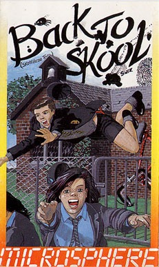
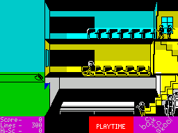
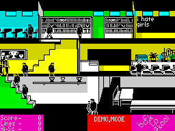

Back to Skool


{kind=link}

| Publisher: | Microsphere |
| Price: | £6.95 |
| Year: | 1985 |
| Source: | CRASH, Issue 23 |

About a year ago Skool Daze was released and was a highly acclaimed game. Back to Skool has you once more playing the part of the mischievous Eric, and is a follow on from the last game. The object of Skool Daze was to steal your terrible school report; now a new term has started, you have spent the hols forging a glowing report for yourself, and must sneak it back into the headmaster’s safe.
A couple of years ago your big brother encountered the same problem and he has very generously lent you his copy of the School rules, on which he has scribbled a few notes in invisible ink. Holding the paper over a fire made from the swot’s cap reveals some hints on how you can go about achieving your task — and Microsphere have kindly printed them on the cassette inlay to help you get started.

more schooltime fun, this time round
with a romantic interest provided by
Tracy
On loading the game a 10 second countdown commences and if you press a key during this time then you can select from the joystick options or alter the names of the characters in the game. Once you have finished this, then the game itself starts with you in the playground controlling Eric.
As might be expected, Eric is still a true Menace and much use of catapult, stink bomb and water pistol is required to progress through the game — you start off with the catty, but will have to find other weapons en route. Teachers roam the corridors and classrooms, always eager to dish out lines and generally be obstructive. While you don’t have lives as such, collect too many lines and the game ends.
Over the holidays, a few building alterations have been completed. There is now an assembly hall where the Headmaster puts the whole school in detention etc. Also the science room has expanded and it is from here that frogs are obtained — very useful in the Girls School down the road! You have to venture into the other school in order to get the key to the safe. In this game you also have a girlfriend: appropriately enough, you have a kiss option... There’s also a bike available, which starts off locked to a tree — a bit of teacher torturing is needed to collect the combination to the lock, but once the bike’s free you can cycle around performing a range of stunts.
One of the most innovative features in both Skool Daze and Back to Skool is the way in which you have to interact with other characters in order to complete the game. Eric has the ability to punch other school chums (including the girls) as well as walk, jump, ride the bike and write on blackboards. In order to complete your tasks you inevitably have to ‘bunk’ off lessons, which can mean the Swot telling on you and thus a lot more lines — but then if you are extra nice to your girlfriend then she might do some of them for you. A status block at the bottom of the screen lets you know your score so far, the number of lines you’ve collected and the high score so far. As you enter classrooms they are identified for you via a message at the bottom of the screen. Calls for assembly, playtime and other hallmarks of the school day also appear for your guidance.
CRITICISM

blackboard in BACK TO SKOOL. Well, at
least they spelt it write!
‘Skool Daze was one of the best games of 1984 and I’m sure it would still be a hit if it was released today. Back to Skool continues the formula but extra dimension has been added to the game. This game is very playable from the word go but it takes a lot of practice and a lot of time to get anywhere. As for the graphics, they live up to the standards set by Skool Daze, indeed they have been improved upon and the extra playing area makes it a delight to look at. This is a very involving and tough arcade adventure, yet it’s very simple to actually play. Overall it is a fantastic game that is well worth the asking price.’
‘I thought Skool Daze was a fine game on the Spectrum and it’s one that still ‘perplexes’ gamers a year after its release. The sequel sees a much improved ‘skool’ with more detailed classes and pupils and better scrolling. The game also has a girls’ ‘skool’ which works really well in relationship to the plot. Back to Skool is the sort of game which you can play many times and ‘mess about’ with just to find out what you can do. You’re supplied with plenty of armament — water pistols, stink bombs, catties and the like which are essential parts of the game. I really loved this game. Go out and buy it.’
‘Though a little overdue (a year overdue to be precise) Back to Skool certainly proves itself as a worthy successor to Skool Daze. Despite the initial similarities between the original and follow up you soon realise that Back to Skool has far greater depth than its predecessor. Some of the problems and solutions will require a great deal of thought indeed. The graphics are just as effective as the original — in fact the backdrops have been improved. Microsphere have come up with a winner here, helping old crumblies like me to remember the best days of their lives. Well worth a look.’
COMMENTS
| Control keys: | Q/A up and down, O/P left and right, F fire catapult, C catch mouse/frog, D/U drop stink bomb, G shoot water pistol, H hit/punch, J/L jump/ leap, M mount bicycle, R release mouse, S sit/stand, T throw away water pistol, W write |
| Joystick: | Kempston, Cursor and Interface 2 |
| Keyboard play: | Lots of keys but they are very responsive |
| Use of colour: | Very good with few attribute problems |
| Graphics: | Excellent characters plus detailed backgrounds |
| Sound: | Not a lot, but it is used reasonably well |
| Lives: | After gaining 10,000 lines you are expelled |
| Screens: | Scrolling playing area |
| General rating: | An excellent sequel to an excellent game, bound to please Skool Daze fans |
| Use of computer: | 91% |
| Graphics: | 94% |
| Playability: | 93% |
| Addictive qualities: | 92% |
| Getting started: | 86% |
| Value for money: | 91% |
| Overall: | 93% |